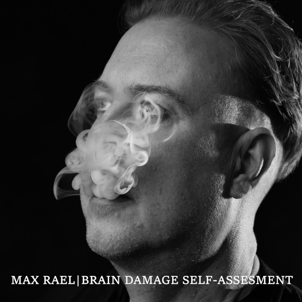

Brain Damage Self-Assessment
Max Rael
- Release Date
- November 2025
- Label
- Liquid Len Recording Company
- Parent Album
- The Enemy Is Us (2025)
- Formats
- Digital Single
Overview & Production Lore
Released in November 2025 via Liquid Len Recording Company as a single from debut solo album The Enemy Is Us, 'Brain Damage Self-Assessment' takes a playful, diagnostic wander through crossed wires, broken bulbs, capacitors, and resistors inside a mechanical model of a brain.
Balancing dark electronic pulse with dry, deadpan humour, the lyric performs an internal audit of a nervous system adapting to sensory overload—mapping the three survival states that follow when a system is pushed past capacity: complete circuit burnout, permanently dimmed signal output, or oscillating between acute hyper-awareness and total shutdown.
Tracklist
- 01 Brain Damage Self-Assessment ALBUM TRACK 09 • SINGLE
Lyrics
Credits & Attribution
- Written by: Max Rael
- Vocals, keyboards & programming: Max Rael
- Produced & mixed by: Max Rael
- Additional mixing: Caden Clarkson
- Mastered by: Pete Maher
- Released by: Liquid Len Recording Company
- Publicity: Shameless Promotion PR
- Cover artwork & photographs: Filiz Photography (Copyright © 2025 FilizPhotographyUK — must not be altered or sold without photographer's permission)